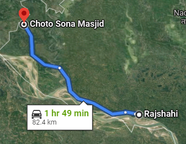

The mosque was built during the reign of the Sultan of Bengal Alauddin Husain Shah, between 1493 and 1519. The fifteen domes of the mosque were once gilded, giving the mosque the name of Choto Shona Masjid (Small Golden Mosque).[1] The mosque is one of the best-preserved sultana monuments under protection by the Department of Archaeology and Museums, Governments of Bangladesh. The gilding that gave the building its name does not exist anymore. The mosque premise, which covers an area of 42 m from east to west by 43.5 m from north to south, was originally surrounded by an outer wall (now restored) with a gateway in the middle of the east side.
Around 83km from Rajshahi
By bus : Around 2 hour 30 minutes
Bus fare : 160/- tk
Small vehicles : Around 3 hour
Small vehicles cost : Average 250/- tk
Parjatan Motel
For more information click here